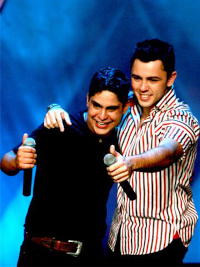
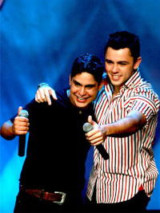

Galeria e Fontes Jorge & Mateus 🎤🎸
 

Fonte da Imagem: Wikipédia / Fonte da Imagem: Wikipédia
Quando começou a carreira da Dupla 🎼. A canção "Pode Chorar 😭" Link da Primeira Música, lançada em 19 de setembro de 2007 no álbum de estreia Ao Vivo em Goiânia, foi o primeiro sucesso nacional da dupla.

Primeira gravação de Jorge e Mateus 🤠🎤 aconteceu em 2005, na casa do Mateus, em Itumbiara. O CD trouxe regravações que conquistaram a nova geração de ouvintes. Entre elas, destacou-se “Querendo te amar 💖” Link da Música, um dos maiores sucessos da dupla.
Voltar para a Página Principal